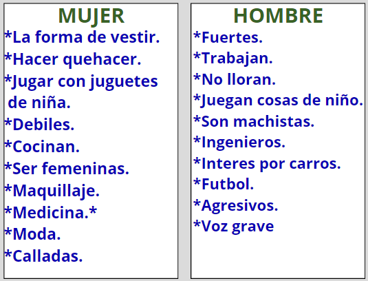
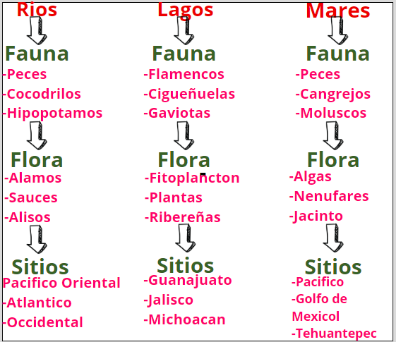
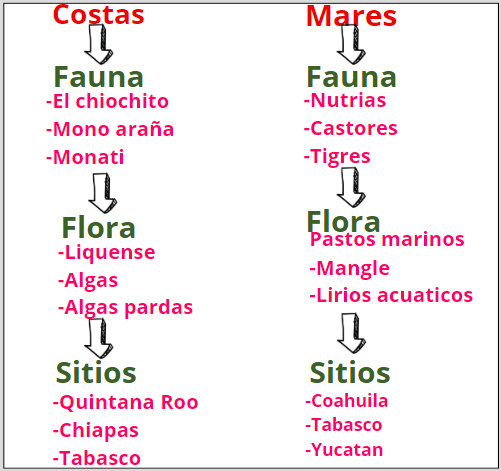
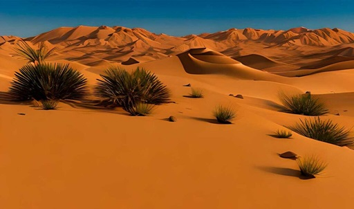
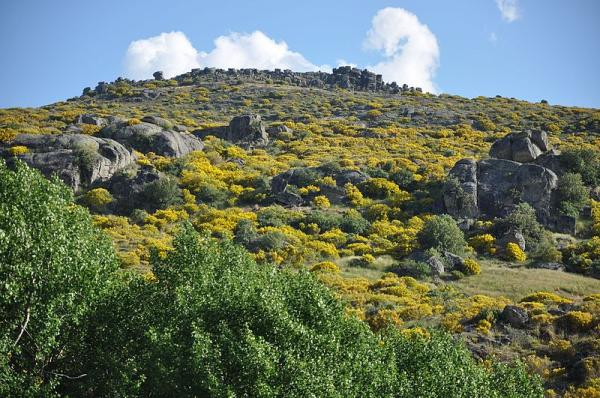
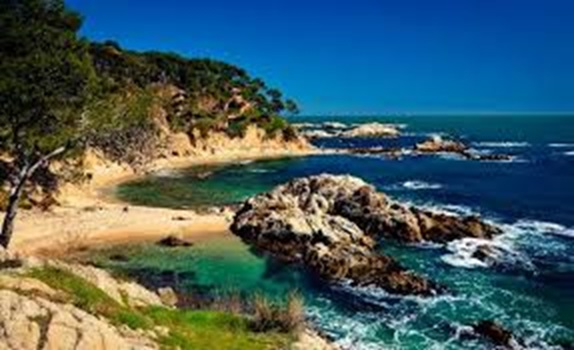
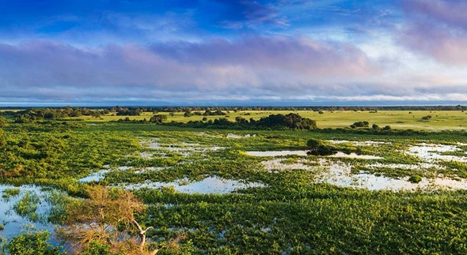

Sexo:
Se refiere a las características biológicas y fisiológicas que diferencian a los hombres y las mujeres. Estas características incluyen los cromosomas, las hormonas, las características sexuales primarias (genitales) y secundarias (como el vello facial en los hombres y el desarrollo mamario en las mujeres). El sexo suele ser clasificado como masculino o femenino, pero también puede haber variaciones intersexuales donde las características sexuales no se ajustan típicamente a la definición binaria de masculino o femenino.
Genero:
Se refiere a las características, roles, comportamientos y expectativas sociales asociadas culturalmente con ser hombre o mujer. El género es una construcción social y puede variar según la cultura y el contexto. A diferencia del sexo, que es biológico, el género es una identidad que una persona desarrolla a lo largo de su vida en función de las normas y expectativas sociales. Las identidades de género pueden incluir masculino, femenino, ambos, ninguno, o una combinación de ambos, y pueden ser independientes del sexo biológico.
Los estereotipos de género son creencias o ideas preconcebidas sobre cómo se espera que se comporte, piense o sienta una persona en función de su género. Estos estereotipos pueden ser limitantes y restrictivos, ya que imponen expectativas rígidas sobre cómo deben ser los roles de género, lo que puede afectar negativamente a individuos y sociedades en general.
Estos estereotipos pueden limitar las oportunidades y elecciones de las personas, así como contribuir a la discriminación, la desigualdad de género y la violencia basada en el género. Desafiar y cuestionar estos estereotipos es fundamental para promover la igualdad de género y la diversidad en todas las áreas de la vida.
10 Estereotipos De Genero Femenino Y 10 Estereotipos De Genero Masculino:

Ecosistemas:
Los ecosistemas son sistemas complejos compuestos por una variedad de organismos vivos (bióticos) que interactúan entre sí y con su entorno físico (abiótico). Estas interacciones se producen en un área determinada, que puede ser tan pequeña como un charco de agua o tan vasta como un océano. Los ecosistemas pueden clasificarse en dos grandes categorías: terrestres y acuáticos.
Independientemente de su tipo, todos los ecosistemas tienen componentes básicos comunes, como productores (plantas que producen su propio alimento a través de la fotosíntesis), consumidores (animales que se alimentan de otros organismos) y descomponedores (microorganismos que descomponen la materia orgánica muerta). Estos componentes interactúan entre sí y con el entorno abiótico, como el clima, el suelo, la luz solar y el agua, para formar redes complejas de relaciones ecológicas.
Terrestres:

Acuaticos:

Mixtos:

Desiertos:
Las tierras aridas absorven cantidades elevadas de C02 del ambiente (disminuyendo los efectos sobre el calentamiento).

Selvas:
-Aporte importante de oxigeno a la biosfera.
-Permiten que el agua de la lluvia se filtre y se recarguen los mantes acuiferos.

Tundras:
-Participa en el mantenimiento de la diversidad de la fauna en el planeta.
-Almacen enorme de Carbono en el "permafrost".

Matorrales:
-Fuente importante de biodiversidad
-Extraccion de productos (productos combustibles, textitles, medicaemntos y plantas).

Rios:
-Se concideran como agua dulce (agua para consumo humano)
-Suministra agua para ciudades, granjas y fabricas.

Mares:
-Fuente importante de recursos naturales para el consumo humano.
-Aporte de oxigeno del planeta a travez de la fotosintesis realizada por las plantas.

Costas:
-Proveen un gran numero de bienes y servicios ambientales que constituyen las bases importantes actividades economicas como la pesca.
-Lugar de importancia ya que ahi se lleva acabo la importancia y exportacion de productos.

Humedades:
-Furge como una barrera natural que disminuye el riesgo de inundaciones.

Alteracion De Los Ecosistemas:
La alteración de los ecosistemas se refiere a los cambios negativos o perturbaciones significativas que afectan la composición, la estructura o la función de un ecosistema. Estas alteraciones pueden ser causadas por una variedad de factores, incluyendo actividades humanas, fenómenos naturales y cambios ambientales.
Estas alteraciones pueden tener graves consecuencias para la salud de los ecosistemas, la biodiversidad, el suministro de alimentos y agua, la estabilidad climática y la calidad de vida de las personas. La conservación y la gestión sostenible de los ecosistemas son fundamentales para mitigar estos impactos y garantizar la salud y el bienestar de las generaciones presentes y futuras.
Huella Ecologica:
La huella ecológica se calcula considerando varios factores, como la cantidad de alimentos consumidos, la energía utilizada, el transporte, la vivienda, los bienes y servicios adquiridos, así como la capacidad de los ecosistemas para regenerarse y absorber los desechos. Se divide en varios componentes:
Huella de carbono: Representa la cantidad de emisiones de dióxido de carbono (CO2) y otros gases de efecto invernadero producidos por actividades humanas, como la quema de combustibles fósiles para la generación de energía, el transporte y la industria.
Huella de tierras cultivadas: Indica el área de tierra necesaria para producir los cultivos y alimentos consumidos por una población determinada.
Huella de pasturas: Representa el área de tierra utilizada para pastoreo de animales y producción de carne, lácteos y otros productos de origen animal.
Huella de pesca: Indica la cantidad de agua necesaria para la pesca de peces y mariscos en mares y océanos.
Huella de construcción: Representa la cantidad de recursos naturales utilizados en la construcción de viviendas, infraestructuras y edificaciones.
Huella de forestación: Indica el área de tierra utilizada para la producción de madera y productos forestales, así como para la absorción de CO2 por parte de los bosques.
La huella ecológica es una herramienta útil para evaluar la sostenibilidad de los estilos de vida y las actividades humanas en relación con la capacidad de carga de la Tierra. Ayuda a identificar áreas donde se puede reducir el consumo de recursos y la generación de residuos para mitigar el impacto ambiental y promover un uso más equitativo y sostenible de los recursos naturales.
Huella Hidrica:
La huella hídrica es una medida del uso total de agua directa e indirecta asociada con la producción de bienes o servicios. Se refiere a la cantidad de agua utilizada en toda la cadena de suministro de un producto, desde la producción de materias primas hasta su consumo final y la gestión de los residuos generados. La huella hídrica se expresa generalmente en términos de volumen de agua utilizada, ya sea en litros o metros cúbicos.
La huella hídrica se divide en tres componentes principales:
Huella hídrica verde: Se refiere al volumen de agua de lluvia evaporada que se utiliza en el crecimiento de cultivos y vegetación natural. Esto incluye el agua que se evapora del suelo y de las plantas durante su crecimiento.
Huella hídrica azul: Representa el volumen de agua superficial y subterránea que se extrae y utiliza de fuentes de agua dulce para la agricultura, la industria y el consumo doméstico. Incluye el agua bombeada de ríos, lagos, acuíferos y embalses.
Huella hídrica gris: Se refiere al volumen de agua necesaria para diluir los contaminantes generados durante la producción de bienes o servicios hasta que los niveles de contaminación cumplan con los estándares de calidad del agua. Esto incluye el agua utilizada en el tratamiento de aguas residuales y la restauración de cuerpos de agua contaminados.
La huella hídrica es una herramienta útil para evaluar y gestionar el uso sostenible del agua, así como para identificar oportunidades para mejorar la eficiencia hídrica en las cadenas de suministro y reducir el impacto ambiental asociado con la utilización de recursos hídricos. Ayuda a concienciar sobre la cantidad de agua utilizada en la producción de bienes y servicios y a promover prácticas más sostenibles en su utilización.